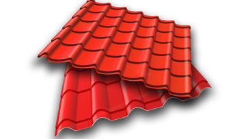

Металлочерепица
Порубкой называется слесарная операция, при которой с помощью режущего инструмента (зубила) с заготовки или детали удаляют лишние слои металла или заготовку разрубают на части.
ПодробнееПорубкой называется слесарная операция, при которой с помощью режущего инструмента (зубила) с заготовки или детали удаляют лишние слои металла или заготовку разрубают на части.
ПодробнееВысокоскоростная размотка катанки в прутки нужного размера дает возможность уменьшить объем отходов и сэкономить до 10% металла с использованием современных технологий.
ПодробнееНаша компания готова доставить приобретенный у нас металлопрокат по всей Украине. Мы оформим складские документы, предварительно загрузив Ваш металлопрокат в машину.
ПодробнееПорубкой называется слесарная операция, при которой с помощью режущего инструмента (зубила) с заготовки или детали удаляют лишние слои металла или заготовку разрубают на части.
ПодробнееВысокоскоростная размотка катанки в прутки нужного размера дает возможность уменьшить объем отходов и сэкономить до 10% металла с использованием современных технологий.
ПодробнееНаша компания готова доставить приобретенный у нас металлопрокат по всей Украине. Мы оформим складские документы, предварительно загрузив Ваш металлопрокат в машину.
Подробнее